Three real network failures captured live and analyzed packet-by-packet — DNS Query Failure, TCP Retransmission, and an ARP/IP Conflict — using only Wireshark and a laptop.
📖 Project Flow at a Glance
Opened Wireshark, selected the active Wi-Fi interface, and started a live capture. Confirmed the local IPv4 address, subnet mask, and default gateway with ipconfig before running any test case.
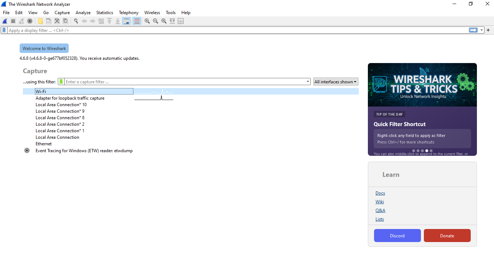
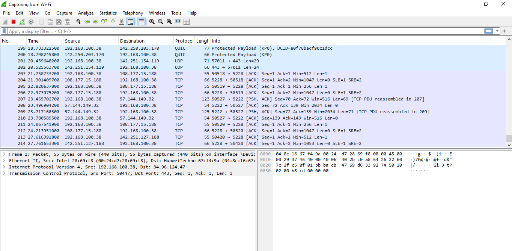
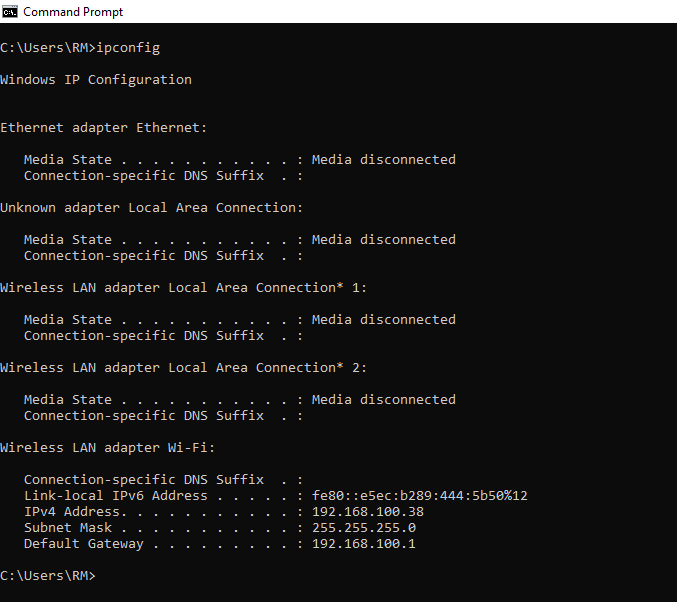
Queried a domain that doesn't exist and used Wireshark to confirm the DNS server's NXDOMAIN response.
nslookup nonexistentdomain12345.com
Filtered the capture down to just this query/response pair:
dns.qry.name contains "nonexistentdomain"
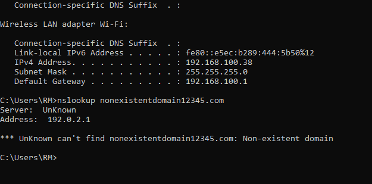
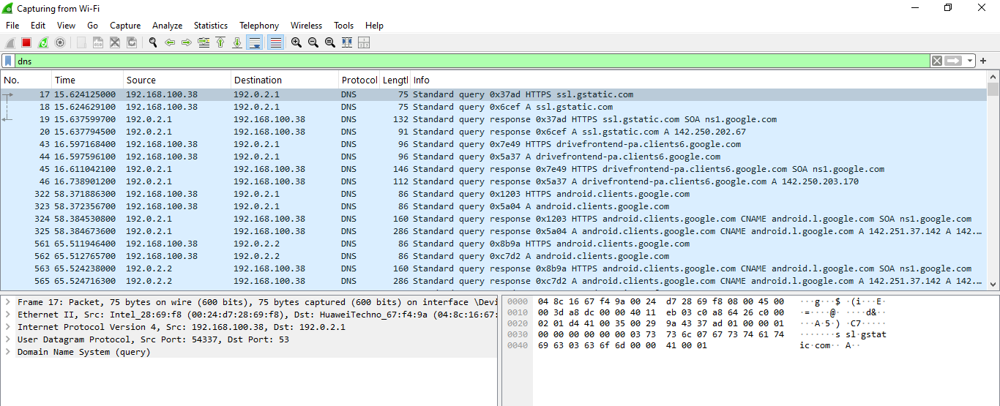
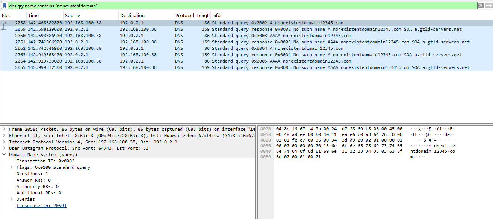
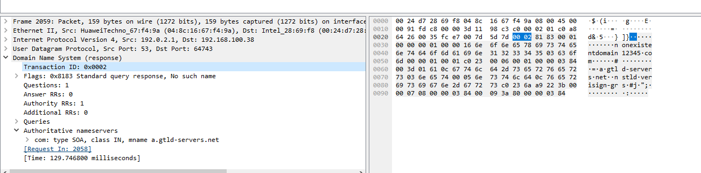
| Field | Value |
|---|---|
| Response flags | 0x8183 — Standard query response, No such name |
| Authority section | SOA record from a.gtld-servers.net |
Root cause: Domain does not exist at the root/TLD level — confirmed by the resolver's NXDOMAIN reply.
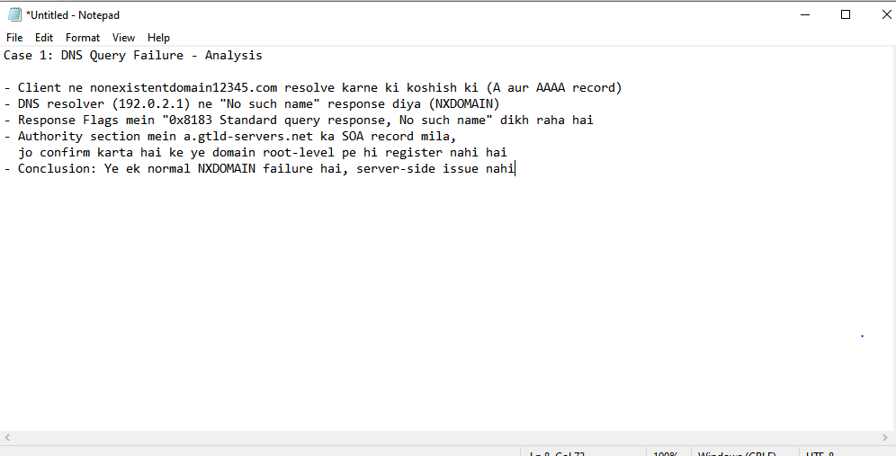
Reset the capture, then downloaded a 1 GB test file over a throttled (~130 KB/s) connection — slow enough that TCP had to detect loss and retransmit segments.
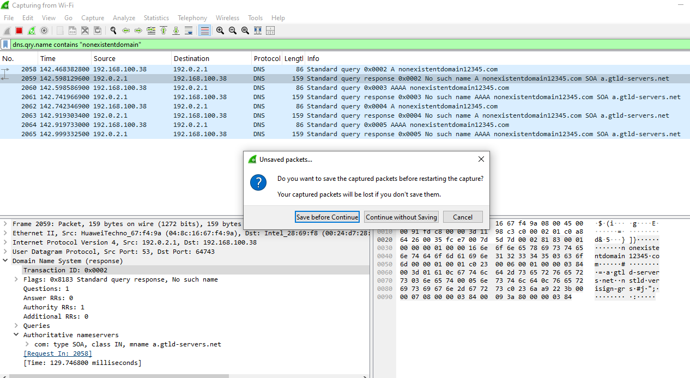
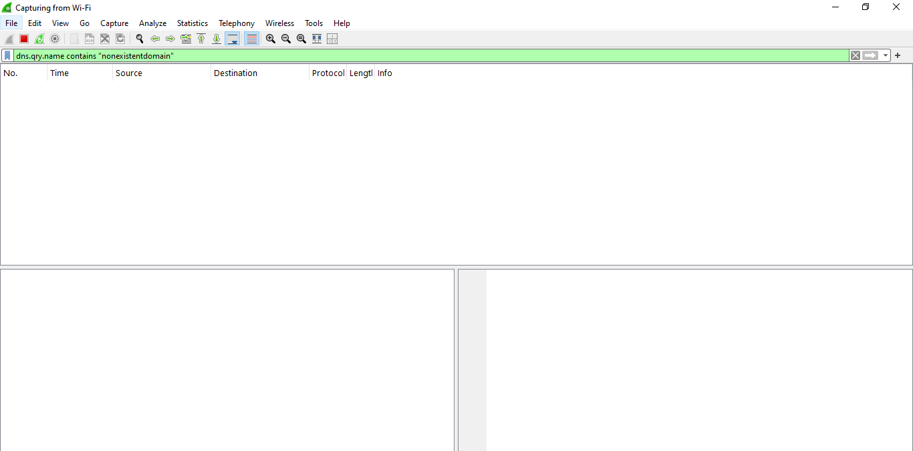
tcp.analysis.retransmission
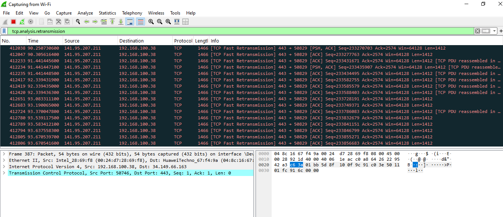
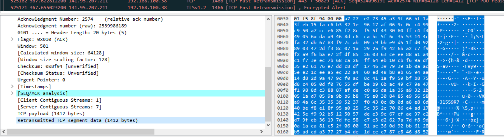
| Field | Value |
|---|---|
| Server | 141.95.207.211, port 443 |
| Segment size | 1412 bytes per retransmission |
| Marker | Retransmitted TCP segment data |
Root cause: Slow/congested link caused packet loss — the server never received timely ACKs and re-sent the same segments.
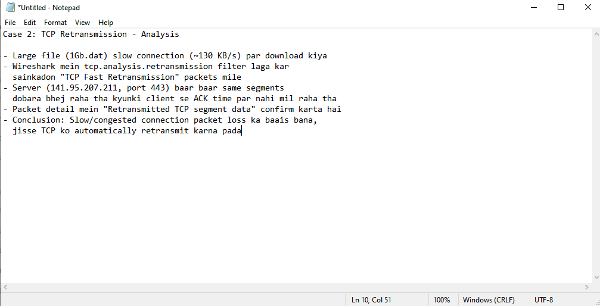
Manually reassigned the PC's IPv4 address to the same address it already held, recreating an IP conflict scenario, and watched Windows' duplicate-IP detection play out over ARP.
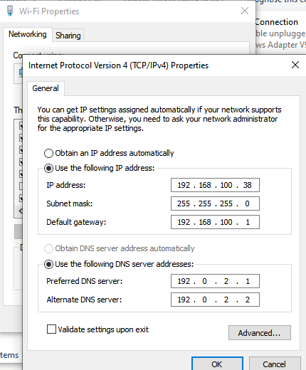
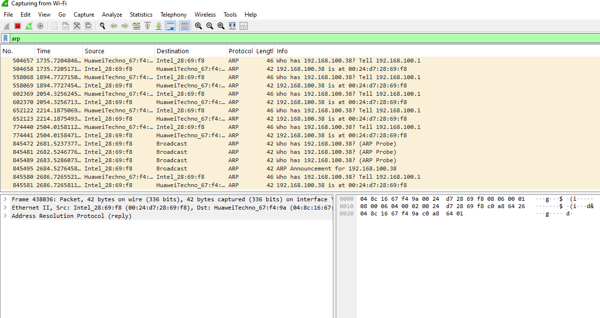
arp.opcode == 2 && arp.src.proto_ipv4 == 192.168.100.38
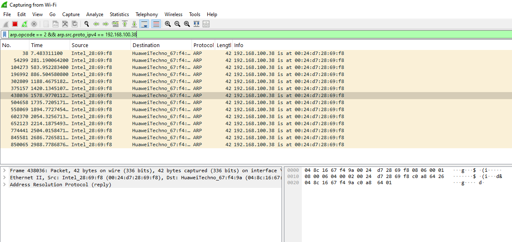
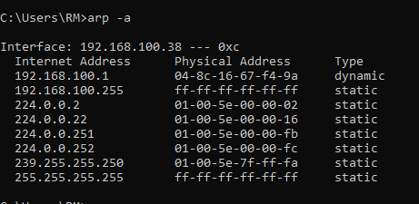
Observation: All replies for 192.168.100.38 came from one MAC address (00:24:d7:28:69:f8) — the conflict was self-induced on a single machine, so no cross-device MAC clash appeared. A real two-device conflict would show two different MAC addresses answering for the same IP.
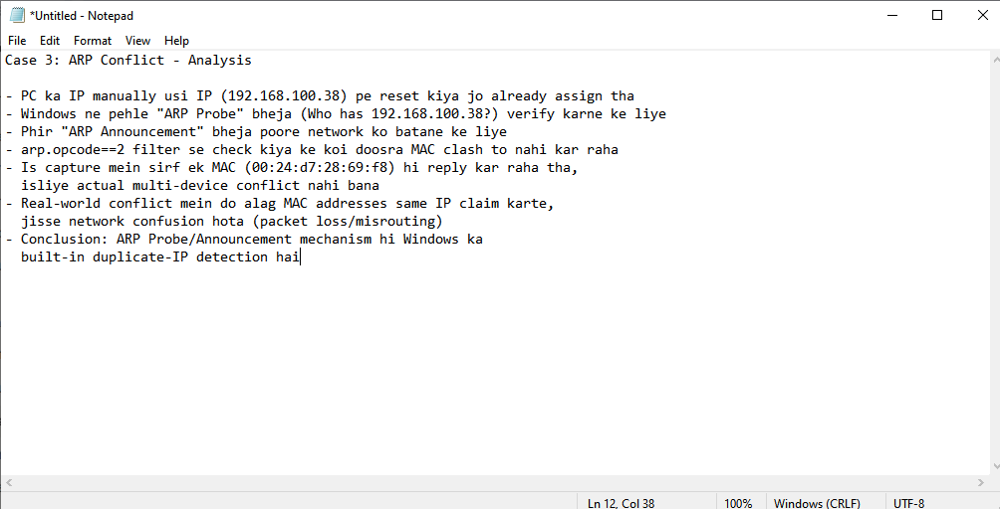
Reviewed the full capture at a protocol level, then saved a verification capture to confirm the export workflow.
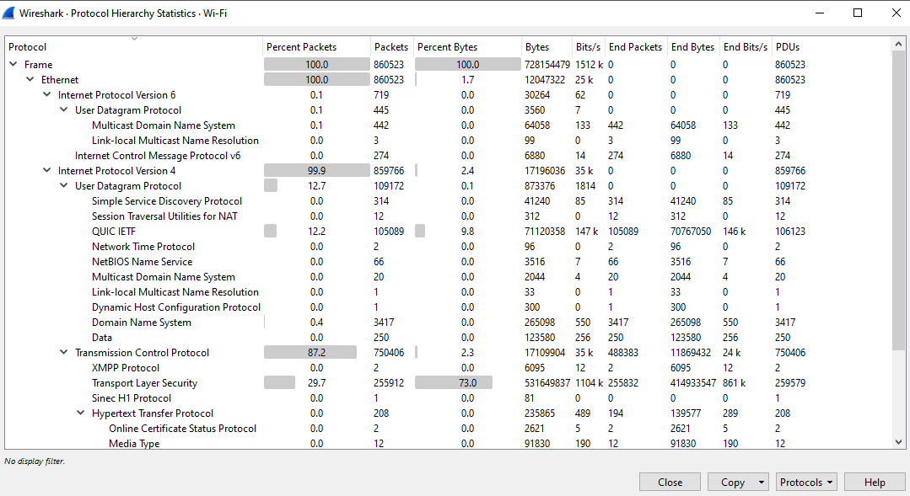
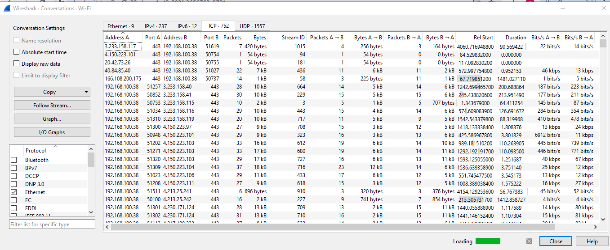
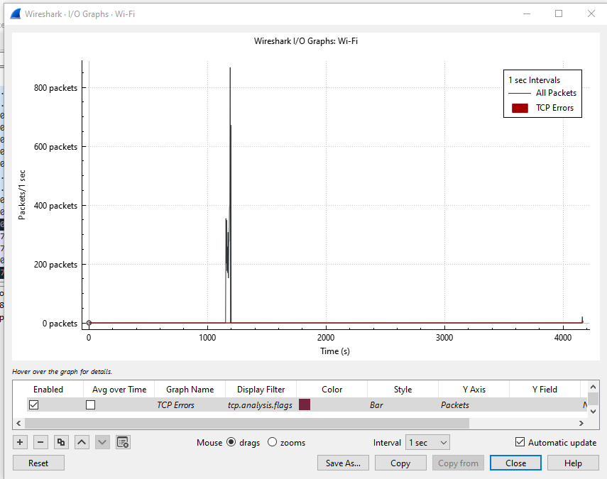
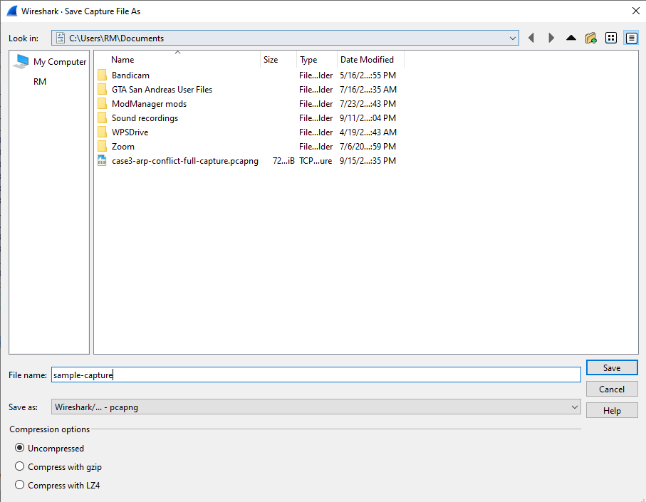
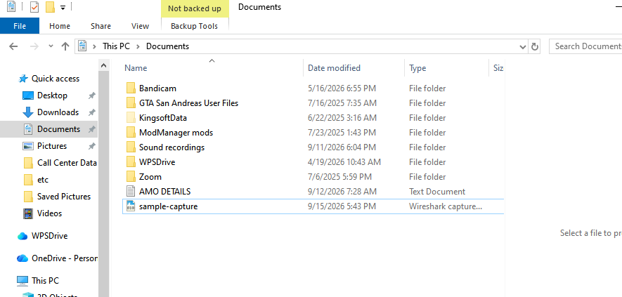
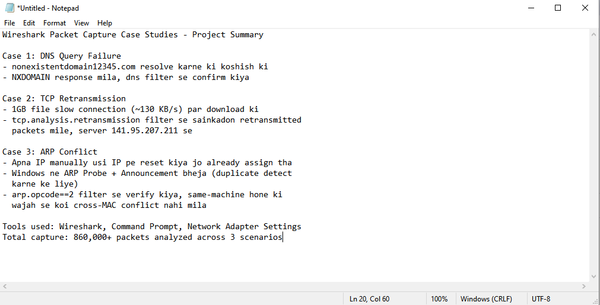
| Case | Filter used | Finding |
|---|---|---|
| DNS Query Failure | dns | NXDOMAIN confirmed |
| TCP Retransmission | tcp.analysis.retransmission | Loss → re-send confirmed |
| ARP Conflict | arp.opcode == 2 | Probe/Announcement confirmed |